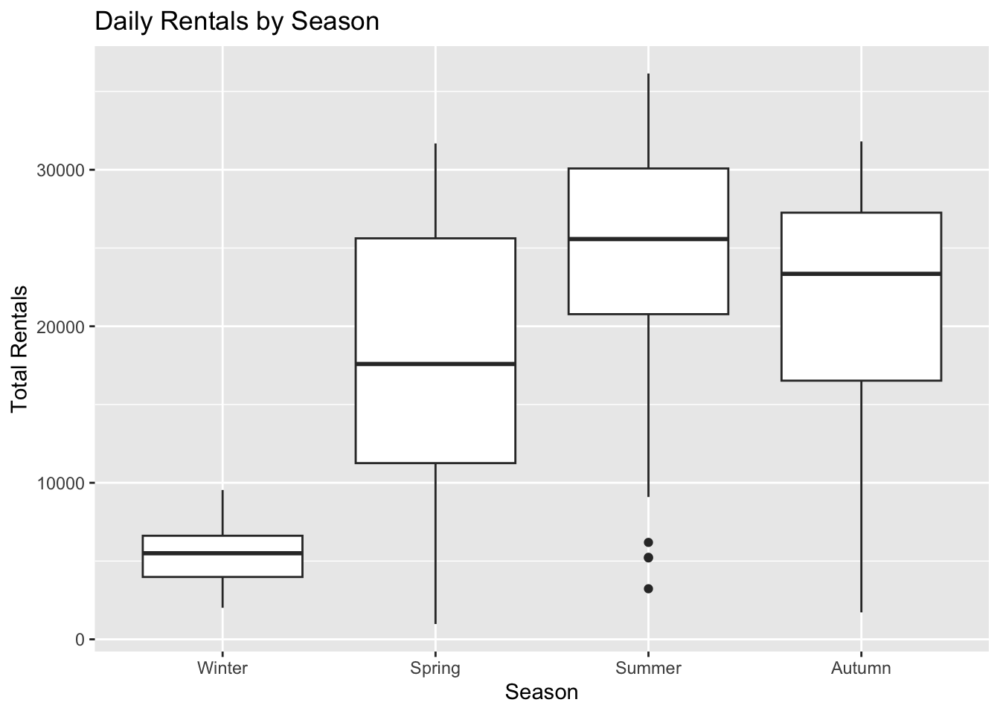
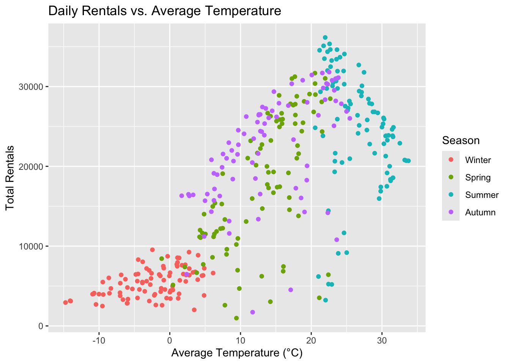
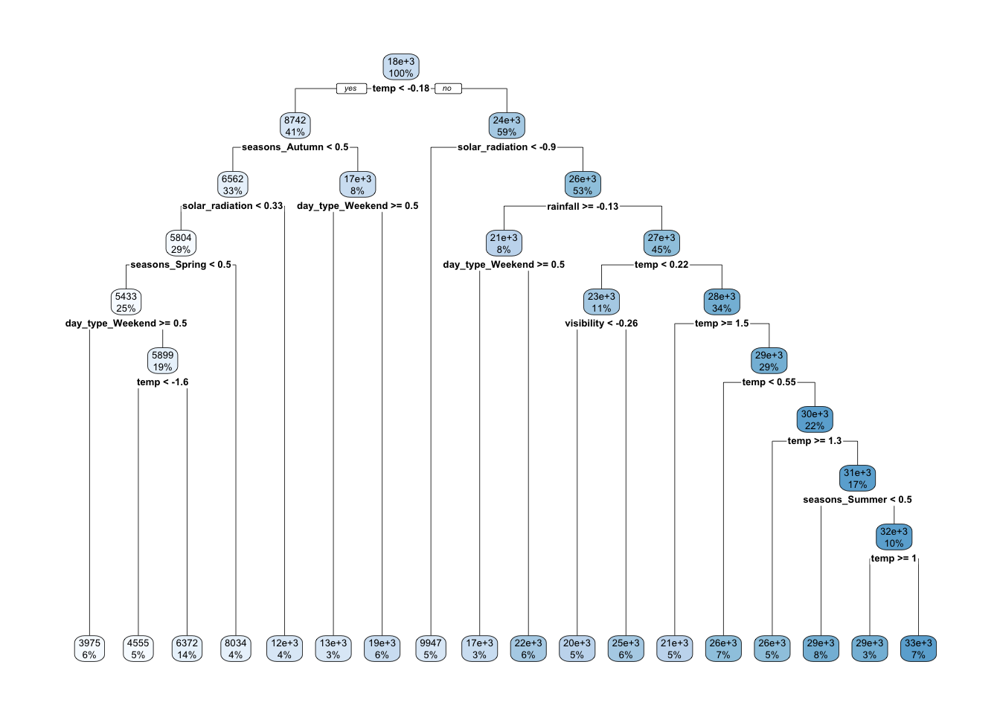
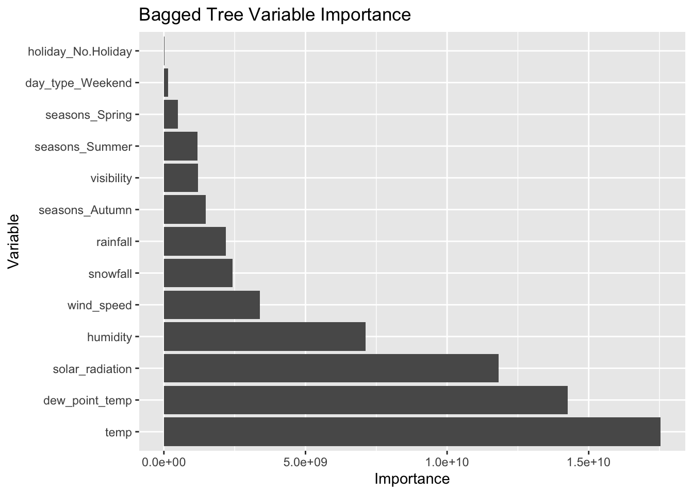
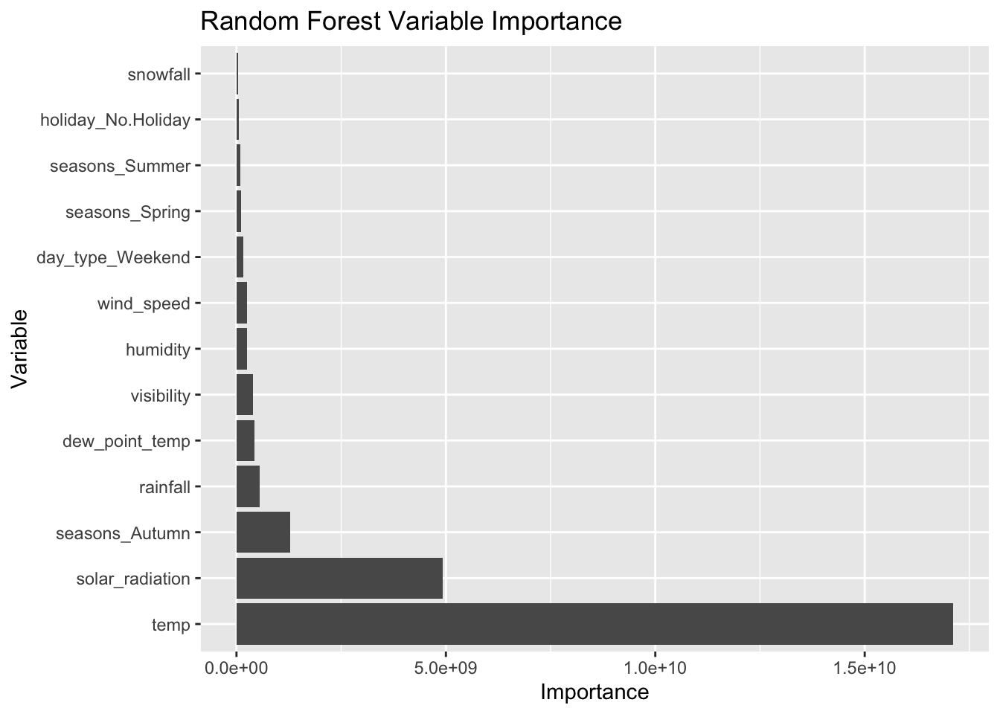
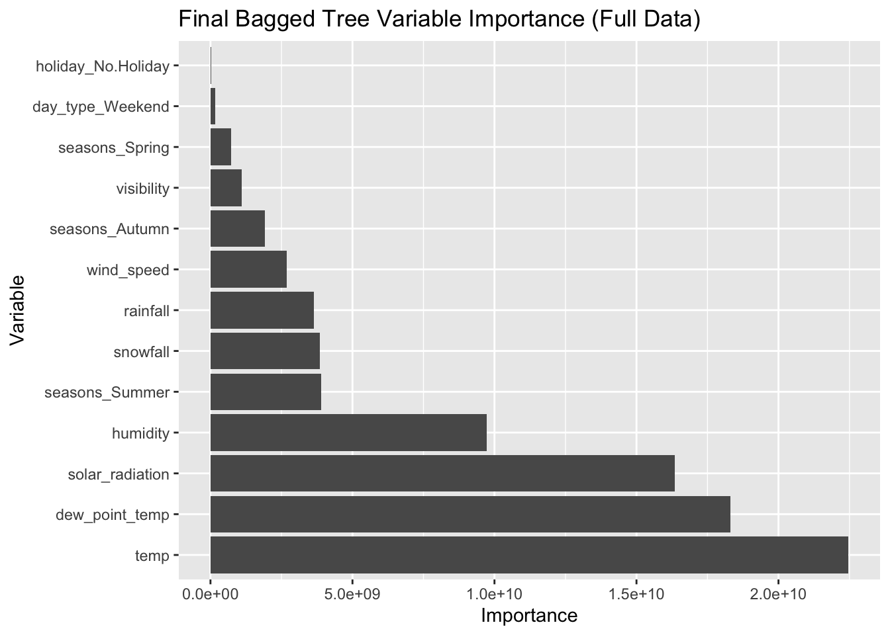

library(tidyverse)
library(lubridate)
library(tidymodels)
library(baguette)
library(rpart.plot)Ryan’s HW10
This document continues the analysis of the Seoul Bike Sharing Demand data from HW9, which records hourly bike rentals in Seoul (Dec 2017 - Nov 2018) along with weather and holiday information. We redo the MLR models in the tidymodels framework and compare them to regression tree, bagged tree, and random forest models.
Reading in the Data
To start we need to read in the data. However, using read_csv() gives the error “invalid multibyte string” because some column names contain the degree symbol (°). This isn’t stored as UTF-8 in this file. This fix is to tell readr to use the latin1 encoding.
bike_data <- read_csv("https://www4.stat.ncsu.edu/~online/datasets/SeoulBikeData.csv",
locale = locale(encoding = "latin1"))Rows: 8760 Columns: 14
── Column specification ────────────────────────────────────────────────────────
Delimiter: ","
chr (4): Date, Seasons, Holiday, Functioning Day
dbl (10): Rented Bike Count, Hour, Temperature(°C), Humidity(%), Wind speed ...
ℹ Use `spec()` to retrieve the full column specification for this data.
ℹ Specify the column types or set `show_col_types = FALSE` to quiet this message.bike_data# A tibble: 8,760 × 14
Date `Rented Bike Count` Hour `Temperature(°C)` `Humidity(%)`
<chr> <dbl> <dbl> <dbl> <dbl>
1 01/12/2017 254 0 -5.2 37
2 01/12/2017 204 1 -5.5 38
3 01/12/2017 173 2 -6 39
4 01/12/2017 107 3 -6.2 40
5 01/12/2017 78 4 -6 36
6 01/12/2017 100 5 -6.4 37
7 01/12/2017 181 6 -6.6 35
8 01/12/2017 460 7 -7.4 38
9 01/12/2017 930 8 -7.6 37
10 01/12/2017 490 9 -6.5 27
# ℹ 8,750 more rows
# ℹ 9 more variables: `Wind speed (m/s)` <dbl>, `Visibility (10m)` <dbl>,
# `Dew point temperature(°C)` <dbl>, `Solar Radiation (MJ/m2)` <dbl>,
# `Rainfall(mm)` <dbl>, `Snowfall (cm)` <dbl>, Seasons <chr>, Holiday <chr>,
# `Functioning Day` <chr>EDA
Checking the Data
We will now proceed with a basic exploratory data analysis. The first thing we will check for is missingness, which is missing data.
bike_data |>
summarize(across(everything(), ~ sum(is.na(.x))))# A tibble: 1 × 14
Date `Rented Bike Count` Hour `Temperature(°C)` `Humidity(%)`
<int> <int> <int> <int> <int>
1 0 0 0 0 0
# ℹ 9 more variables: `Wind speed (m/s)` <int>, `Visibility (10m)` <int>,
# `Dew point temperature(°C)` <int>, `Solar Radiation (MJ/m2)` <int>,
# `Rainfall(mm)` <int>, `Snowfall (cm)` <int>, Seasons <int>, Holiday <int>,
# `Functioning Day` <int>Since all columns show zeros, then none of them contain any missing data. Therefore, no row needs to be removed or imputed.
Next we check that each column was read in as the type we expect.
str(bike_data)spc_tbl_ [8,760 × 14] (S3: spec_tbl_df/tbl_df/tbl/data.frame)
$ Date : chr [1:8760] "01/12/2017" "01/12/2017" "01/12/2017" "01/12/2017" ...
$ Rented Bike Count : num [1:8760] 254 204 173 107 78 100 181 460 930 490 ...
$ Hour : num [1:8760] 0 1 2 3 4 5 6 7 8 9 ...
$ Temperature(°C) : num [1:8760] -5.2 -5.5 -6 -6.2 -6 -6.4 -6.6 -7.4 -7.6 -6.5 ...
$ Humidity(%) : num [1:8760] 37 38 39 40 36 37 35 38 37 27 ...
$ Wind speed (m/s) : num [1:8760] 2.2 0.8 1 0.9 2.3 1.5 1.3 0.9 1.1 0.5 ...
$ Visibility (10m) : num [1:8760] 2000 2000 2000 2000 2000 ...
$ Dew point temperature(°C): num [1:8760] -17.6 -17.6 -17.7 -17.6 -18.6 -18.7 -19.5 -19.3 -19.8 -22.4 ...
$ Solar Radiation (MJ/m2) : num [1:8760] 0 0 0 0 0 0 0 0 0.01 0.23 ...
$ Rainfall(mm) : num [1:8760] 0 0 0 0 0 0 0 0 0 0 ...
$ Snowfall (cm) : num [1:8760] 0 0 0 0 0 0 0 0 0 0 ...
$ Seasons : chr [1:8760] "Winter" "Winter" "Winter" "Winter" ...
$ Holiday : chr [1:8760] "No Holiday" "No Holiday" "No Holiday" "No Holiday" ...
$ Functioning Day : chr [1:8760] "Yes" "Yes" "Yes" "Yes" ...
- attr(*, "spec")=
.. cols(
.. Date = col_character(),
.. `Rented Bike Count` = col_double(),
.. Hour = col_double(),
.. `Temperature(°C)` = col_double(),
.. `Humidity(%)` = col_double(),
.. `Wind speed (m/s)` = col_double(),
.. `Visibility (10m)` = col_double(),
.. `Dew point temperature(°C)` = col_double(),
.. `Solar Radiation (MJ/m2)` = col_double(),
.. `Rainfall(mm)` = col_double(),
.. `Snowfall (cm)` = col_double(),
.. Seasons = col_character(),
.. Holiday = col_character(),
.. `Functioning Day` = col_character()
.. )
- attr(*, "problems")=<externalptr> As expected, counts and weather measurements were read in as numeric. Date was read in as a character, which we’ll need to convert. And we will change Seasons, Holiday, and Functioning Day from character to factor.
We now look at a basic numeric summary of the data.
bike_data |>
select(where(is.numeric)) |>
summary() Rented Bike Count Hour Temperature(°C) Humidity(%)
Min. : 0.0 Min. : 0.00 Min. :-17.80 Min. : 0.00
1st Qu.: 191.0 1st Qu.: 5.75 1st Qu.: 3.50 1st Qu.:42.00
Median : 504.5 Median :11.50 Median : 13.70 Median :57.00
Mean : 704.6 Mean :11.50 Mean : 12.88 Mean :58.23
3rd Qu.:1065.2 3rd Qu.:17.25 3rd Qu.: 22.50 3rd Qu.:74.00
Max. :3556.0 Max. :23.00 Max. : 39.40 Max. :98.00
Wind speed (m/s) Visibility (10m) Dew point temperature(°C)
Min. :0.000 Min. : 27 Min. :-30.600
1st Qu.:0.900 1st Qu.: 940 1st Qu.: -4.700
Median :1.500 Median :1698 Median : 5.100
Mean :1.725 Mean :1437 Mean : 4.074
3rd Qu.:2.300 3rd Qu.:2000 3rd Qu.: 14.800
Max. :7.400 Max. :2000 Max. : 27.200
Solar Radiation (MJ/m2) Rainfall(mm) Snowfall (cm)
Min. :0.0000 Min. : 0.0000 Min. :0.00000
1st Qu.:0.0000 1st Qu.: 0.0000 1st Qu.:0.00000
Median :0.0100 Median : 0.0000 Median :0.00000
Mean :0.5691 Mean : 0.1487 Mean :0.07507
3rd Qu.:0.9300 3rd Qu.: 0.0000 3rd Qu.:0.00000
Max. :3.5200 Max. :35.0000 Max. :8.80000 Most statistics appear normal here. Rainfall(mm) and Snowfall(cm) both have medians and third quartiles of 0, so they appear quite rare in Seoul. Something like Humidity having a minimum of 0% may not be realistic but it could be measurement error.
Next we examine the unique values of the categorical columns.
unique(bike_data$Seasons)[1] "Winter" "Spring" "Summer" "Autumn"unique(bike_data$Holiday)[1] "No Holiday" "Holiday" unique(bike_data$`Functioning Day`)[1] "Yes" "No" Each categorical variable has the levels described in the data documentation, so everything looks good here.
Fixing Dates, Factors, and Names
Now we clean the data. We convert Date from day/month/year text into a real date with lubridate::dmy() and turn the three character variables into factors. We give Seasons a level order so the seasons are listed in their chronological order. Lastly, we rename every column to lower snake case for simplicity.
bike_data <- bike_data |>
mutate(Date = dmy(Date),
Seasons = factor(Seasons, levels = c("Winter", "Spring", "Summer", "Autumn")),
Holiday = factor(Holiday),
`Functioning Day` = factor(`Functioning Day`)) |>
rename(date = Date,
bike_count = `Rented Bike Count`,
hour = Hour,
temp = `Temperature(°C)`,
humidity = `Humidity(%)`,
wind_speed = `Wind speed (m/s)`,
visibility = `Visibility (10m)`,
dew_point_temp = `Dew point temperature(°C)`,
solar_radiation = `Solar Radiation (MJ/m2)`,
rainfall = `Rainfall(mm)`,
snowfall = `Snowfall (cm)`,
seasons = Seasons,
holiday = Holiday,
functioning_day = `Functioning Day`)
bike_data# A tibble: 8,760 × 14
date bike_count hour temp humidity wind_speed visibility
<date> <dbl> <dbl> <dbl> <dbl> <dbl> <dbl>
1 2017-12-01 254 0 -5.2 37 2.2 2000
2 2017-12-01 204 1 -5.5 38 0.8 2000
3 2017-12-01 173 2 -6 39 1 2000
4 2017-12-01 107 3 -6.2 40 0.9 2000
5 2017-12-01 78 4 -6 36 2.3 2000
6 2017-12-01 100 5 -6.4 37 1.5 2000
7 2017-12-01 181 6 -6.6 35 1.3 2000
8 2017-12-01 460 7 -7.4 38 0.9 2000
9 2017-12-01 930 8 -7.6 37 1.1 2000
10 2017-12-01 490 9 -6.5 27 0.5 1928
# ℹ 8,750 more rows
# ℹ 7 more variables: dew_point_temp <dbl>, solar_radiation <dbl>,
# rainfall <dbl>, snowfall <dbl>, seasons <fct>, holiday <fct>,
# functioning_day <fct>The result is that date is now properly stored as a date, the three categorical variables are factors, and all the column names are easy to use.
Summarizing Rentals by Category
Next we summarize the rental count across each categorical variable to see how rentals differ between groups and to check for anything unusual.
We begin by summarizing seasons.
bike_data |>
group_by(seasons) |>
summarize(n = n(),
mean_count = mean(bike_count),
median_count = median(bike_count),
sd_count = sd(bike_count),
min_count = min(bike_count),
max_count = max(bike_count))# A tibble: 4 × 7
seasons n mean_count median_count sd_count min_count max_count
<fct> <int> <dbl> <dbl> <dbl> <dbl> <dbl>
1 Winter 2160 226. 203 150. 3 937
2 Spring 2208 730. 583 622. 0 3251
3 Summer 2208 1034. 906. 690. 9 3556
4 Autumn 2184 820. 764. 651. 0 3298Next we summarize holiday.
bike_data |>
group_by(holiday) |>
summarize(n = n(),
mean_count = mean(bike_count),
median_count = median(bike_count),
sd_count = sd(bike_count),
min_count = min(bike_count),
max_count = max(bike_count))# A tibble: 2 × 7
holiday n mean_count median_count sd_count min_count max_count
<fct> <int> <dbl> <dbl> <dbl> <dbl> <dbl>
1 Holiday 432 500. 240 571. 0 2400
2 No Holiday 8328 715. 524. 647. 0 3556Next we summarize functioning_day.
bike_data |>
group_by(functioning_day) |>
summarize(n = n(),
mean_count = mean(bike_count),
median_count = median(bike_count),
sd_count = sd(bike_count),
min_count = min(bike_count),
max_count = max(bike_count))# A tibble: 2 × 7
functioning_day n mean_count median_count sd_count min_count max_count
<fct> <int> <dbl> <dbl> <dbl> <dbl> <dbl>
1 No 295 0 0 0 0 0
2 Yes 8465 729. 542 642. 2 3556Finally, we examine only the hours when the bike-sharing system was functioning to get a more accurate picture.
bike_data <- bike_data |>
filter(functioning_day == "Yes")
bike_data# A tibble: 8,465 × 14
date bike_count hour temp humidity wind_speed visibility
<date> <dbl> <dbl> <dbl> <dbl> <dbl> <dbl>
1 2017-12-01 254 0 -5.2 37 2.2 2000
2 2017-12-01 204 1 -5.5 38 0.8 2000
3 2017-12-01 173 2 -6 39 1 2000
4 2017-12-01 107 3 -6.2 40 0.9 2000
5 2017-12-01 78 4 -6 36 2.3 2000
6 2017-12-01 100 5 -6.4 37 1.5 2000
7 2017-12-01 181 6 -6.6 35 1.3 2000
8 2017-12-01 460 7 -7.4 38 0.9 2000
9 2017-12-01 930 8 -7.6 37 1.1 2000
10 2017-12-01 490 9 -6.5 27 0.5 1928
# ℹ 8,455 more rows
# ℹ 7 more variables: dew_point_temp <dbl>, solar_radiation <dbl>,
# rainfall <dbl>, snowfall <dbl>, seasons <fct>, holiday <fct>,
# functioning_day <fct>Many observations can be made from the summaries above. Rentals appear to follow the seasons: Summer has the highest average hourly count (about 1,034) and Winter the lowest (about 226). Holidays average fewer rentals than non-holidays (about 500 vs. 715 per hour).
As for functioning_day, all 295 non-functioning hours have no rentals. In those hours the system wasn’t running, so the zeros don’t accurately reflect demand. Thus, we remove them to prevent their effect on our summaries, leaving functioning 8,465 hours. This also explains the minimum of 0 for Spring and Autumn in the seasons table because those are the seasons where the shutdowns happened.
Summarizing to One Row per Day
To simplify our analysis, we summarize across the hours so that each day has one corresponding row. We group by date, seasons, and holiday. Each date has one season and holiday status. Within each day, we sum bike_count, rainfall, and snowfall, since these accumulate. We average the other weather variables because they’re measured at each hour and a total wouldn’t make sense.
bike_daily <- bike_data |>
group_by(date, seasons, holiday) |>
summarize(bike_count = sum(bike_count),
rainfall = sum(rainfall),
snowfall = sum(snowfall),
temp = mean(temp),
humidity = mean(humidity),
wind_speed = mean(wind_speed),
visibility = mean(visibility),
dew_point_temp = mean(dew_point_temp),
solar_radiation = mean(solar_radiation)) |>
ungroup()
bike_daily# A tibble: 353 × 12
date seasons holiday bike_count rainfall snowfall temp humidity
<date> <fct> <fct> <dbl> <dbl> <dbl> <dbl> <dbl>
1 2017-12-01 Winter No Holiday 9539 0 0 -2.45 45.9
2 2017-12-02 Winter No Holiday 8523 0 0 1.33 62.0
3 2017-12-03 Winter No Holiday 7222 4 0 4.88 81.5
4 2017-12-04 Winter No Holiday 8729 0.1 0 -0.304 52.5
5 2017-12-05 Winter No Holiday 8307 0 0 -4.46 36.4
6 2017-12-06 Winter No Holiday 6669 1.3 8.6 0.0458 70.8
7 2017-12-07 Winter No Holiday 8549 0 10.4 1.09 67.5
8 2017-12-08 Winter No Holiday 8032 0 0 -3.82 41.8
9 2017-12-09 Winter No Holiday 7233 0 0 -0.846 46
10 2017-12-10 Winter No Holiday 3453 4.1 32.5 1.19 69.7
# ℹ 343 more rows
# ℹ 4 more variables: wind_speed <dbl>, visibility <dbl>, dew_point_temp <dbl>,
# solar_radiation <dbl>We now have 353 days, one row per day. We dropped hour and functioning_day from bike_daily since they weren’t applicable (but still remain in bike_data).
Exploring the Daily Data
With one row per day, we redo our summaries on the daily data, then use plots and correlations to explore how rentals relate to the other variables.
bike_daily |>
select(where(is.numeric)) |>
summary() bike_count rainfall snowfall temp
Min. : 977 Min. : 0.000 Min. : 0.000 Min. :-14.738
1st Qu.: 6967 1st Qu.: 0.000 1st Qu.: 0.000 1st Qu.: 3.304
Median :18563 Median : 0.000 Median : 0.000 Median : 13.738
Mean :17485 Mean : 3.576 Mean : 1.863 Mean : 12.776
3rd Qu.:26285 3rd Qu.: 0.500 3rd Qu.: 0.000 3rd Qu.: 22.592
Max. :36149 Max. :95.500 Max. :78.700 Max. : 33.742
humidity wind_speed visibility dew_point_temp
Min. :22.25 Min. :0.6625 Min. : 214.3 Min. :-27.750
1st Qu.:47.58 1st Qu.:1.3042 1st Qu.:1087.0 1st Qu.: -5.188
Median :57.17 Median :1.6583 Median :1557.8 Median : 4.612
Mean :58.17 Mean :1.7261 Mean :1434.0 Mean : 3.954
3rd Qu.:67.71 3rd Qu.:1.9542 3rd Qu.:1874.3 3rd Qu.: 14.921
Max. :95.88 Max. :4.0000 Max. :2000.0 Max. : 25.038
solar_radiation
Min. :0.02917
1st Qu.:0.28333
Median :0.56500
Mean :0.56773
3rd Qu.:0.82000
Max. :1.21667 bike_daily |>
group_by(seasons) |>
summarize(n = n(),
mean_count = mean(bike_count),
median_count = median(bike_count),
sd_count = sd(bike_count),
min_count = min(bike_count),
max_count = max(bike_count))# A tibble: 4 × 7
seasons n mean_count median_count sd_count min_count max_count
<fct> <int> <dbl> <dbl> <dbl> <dbl> <dbl>
1 Winter 90 5413. 5498 1808. 2014 9539
2 Spring 90 17910. 17590 8357. 977 31681
3 Summer 92 24818. 25572. 7297. 3231 36149
4 Autumn 81 22099. 23350 6711. 1721 31809bike_daily |>
group_by(holiday) |>
summarize(n = n(),
mean_count = mean(bike_count),
median_count = median(bike_count),
sd_count = sd(bike_count),
min_count = min(bike_count),
max_count = max(bike_count))# A tibble: 2 × 7
holiday n mean_count median_count sd_count min_count max_count
<fct> <int> <dbl> <dbl> <dbl> <dbl> <dbl>
1 Holiday 17 12700. 7184 10504. 2014 30498
2 No Holiday 336 17727. 19104. 9862. 977 36149A typical day has about 17,500 rentals. The seasonal pattern from the hourly data still holds: Summer averages about 24,800 rentals a day and Winter only about 5,400. Holidays average fewer rentals than other days (about 12,700 vs. 17,700), but there are only 17 holiday days, so that comparison is less reliable.
Plots
ggplot(bike_daily, aes(x = seasons, y = bike_count)) +
geom_boxplot() +
labs(title = "Daily Rentals by Season",
x = "Season", y = "Total Rentals")
ggplot(bike_daily, aes(x = temp, y = bike_count, color = seasons)) +
geom_point() +
labs(title = "Daily Rentals vs. Average Temperature",
x = "Average Temperature (°C)", y = "Total Rentals", color = "Season")
The boxplot shows that Winter is quite different from the rest. The rentals in Winter are low and without much variation, while the other three seasons have many more rentals and variation. The scatterplot shows that Total Rentals climb as days get warmer up to about 22°C, then drop.
Correlations
bike_daily |>
select(where(is.numeric)) |>
cor() |>
round(2) bike_count rainfall snowfall temp humidity wind_speed
bike_count 1.00 -0.24 -0.27 0.75 0.04 -0.19
rainfall -0.24 1.00 -0.02 0.14 0.53 -0.10
snowfall -0.27 -0.02 1.00 -0.27 0.07 0.02
temp 0.75 0.14 -0.27 1.00 0.40 -0.26
humidity 0.04 0.53 0.07 0.40 1.00 -0.23
wind_speed -0.19 -0.10 0.02 -0.26 -0.23 1.00
visibility 0.17 -0.22 -0.10 0.00 -0.56 0.21
dew_point_temp 0.65 0.26 -0.21 0.96 0.63 -0.29
solar_radiation 0.74 -0.32 -0.23 0.55 -0.27 0.10
visibility dew_point_temp solar_radiation
bike_count 0.17 0.65 0.74
rainfall -0.22 0.26 -0.32
snowfall -0.10 -0.21 -0.23
temp 0.00 0.96 0.55
humidity -0.56 0.63 -0.27
wind_speed 0.21 -0.29 0.10
visibility 1.00 -0.15 0.27
dew_point_temp -0.15 1.00 0.38
solar_radiation 0.27 0.38 1.00Rentals are most strongly correlated with temperature (0.75), solar radiation (0.74), and dew point temperature (0.65). Rainfall and snowfall have weak negative correlations (-0.24 and -0.27). Humidity has almost no linear correlation with rentals (0.04), even though it’s related to rain. This seems to align with what we found in the previous plots.
Splitting the Data
We split the data into a training set (75%) and test set (25%), stratifying on seasons so each season makes up about the same share of both sets. We then create 10 cross-validation folds on the training set, which we’ll use to choose and tune our models.
set.seed(10)
bike_split <- initial_split(bike_daily, prop = 0.75, strata = seasons)
bike_train <- training(bike_split)
bike_test <- testing(bike_split)
bike_10_fold <- vfold_cv(bike_train, 10)
bike_split<Training/Testing/Total>
<263/90/353>bike_10_fold# 10-fold cross-validation
# A tibble: 10 × 2
splits id
<list> <chr>
1 <split [236/27]> Fold01
2 <split [236/27]> Fold02
3 <split [236/27]> Fold03
4 <split [237/26]> Fold04
5 <split [237/26]> Fold05
6 <split [237/26]> Fold06
7 <split [237/26]> Fold07
8 <split [237/26]> Fold08
9 <split [237/26]> Fold09
10 <split [237/26]> Fold10Fitting MLR Models
Recipes
Our first recipe uses date to create a weekday/weekend factor (day_type), then remove date and the intermediate variable. It standardizes the eight numeric weather variables and creates dummy variables for seasons, holiday, and day_type.
rec1 <- recipe(bike_count ~ ., data = bike_train) |>
step_date(date, features = "dow", keep_original_cols = FALSE) |>
step_mutate(day_type = factor(if_else(date_dow %in% c("Sat", "Sun"), "Weekend", "Weekday"))) |>
step_rm(date_dow) |>
step_normalize(all_numeric(), -all_outcomes()) |>
step_dummy(seasons, holiday, day_type)The second recipe adds to the first recipe by including interactions between seasons and holiday, seasons and temp, and temp and rainfall.
rec2 <- rec1 |>
step_interact(terms = ~ starts_with("seasons"):starts_with("holiday") +
starts_with("seasons"):temp +
temp:rainfall)The third recipe adds to the second recipe by including squared terms for the standardized temperature and humidity.
rec3 <- rec2 |>
step_mutate(temp_sq = temp^2, humidity_sq = humidity^2)Fitting with Cross-Validation
We set up a linear model with the lm engine, pair it with each recipe in a workflow, and fit each workflow on the 10 CV folds.
MLR_spec <- linear_reg() |>
set_engine("lm")
MLR_wkf1 <- workflow() |>
add_recipe(rec1) |>
add_model(MLR_spec)
MLR_wkf2 <- workflow() |>
add_recipe(rec2) |>
add_model(MLR_spec)
MLR_wkf3 <- workflow() |>
add_recipe(rec3) |>
add_model(MLR_spec)
MLR_fit1 <- MLR_wkf1 |>
fit_resamples(bike_10_fold)
MLR_fit2 <- MLR_wkf2 |>
fit_resamples(bike_10_fold)
MLR_fit3 <- MLR_wkf3 |>
fit_resamples(bike_10_fold)
rbind(MLR_fit1 |> collect_metrics() |> filter(.metric == "rmse"),
MLR_fit2 |> collect_metrics() |> filter(.metric == "rmse"),
MLR_fit3 |> collect_metrics() |> filter(.metric == "rmse")) |>
mutate(Model = c("Model 1", "Model 2", "Model 3")) |>
select(Model, mean, n, std_err)# A tibble: 3 × 4
Model mean n std_err
<chr> <dbl> <int> <dbl>
1 Model 1 4248. 10 226.
2 Model 2 3080. 10 278.
3 Model 3 3061. 10 271.Model 3 has the lowest CV RMSE (about 3,061), and Model 2 similarly at 3,080. Model 1 is much worse at 4,248. We choose Model 3 as our best MLR model since it has the lowest CV error.
Final MLR Fit
We fit Model 3 to the entire training set and evaluate it on the test set.
MLR_final_fit <- MLR_wkf3 |>
last_fit(bike_split, metrics = metric_set(rmse, mae))
MLR_final_fit |> collect_metrics()# A tibble: 2 × 4
.metric .estimator .estimate .config
<chr> <chr> <dbl> <chr>
1 rmse standard 3133. pre0_mod0_post0
2 mae standard 2252. pre0_mod0_post0The final coefficient table:
MLR_final_fit |>
extract_fit_parsnip() |>
tidy()|>
print(n = 23)# A tibble: 23 × 5
term estimate std.error statistic p.value
<chr> <dbl> <dbl> <dbl> <dbl>
1 (Intercept) 9286. 2286. 4.06 6.61e- 5
2 rainfall -1611. 336. -4.79 2.95e- 6
3 snowfall -283. 199. -1.42 1.56e- 1
4 temp -4783. 4856. -0.985 3.26e- 1
5 humidity -1826. 1454. -1.26 2.10e- 1
6 wind_speed -386. 209. -1.85 6.58e- 2
7 visibility 364. 284. 1.28 2.01e- 1
8 dew_point_temp 4597. 4666. 0.985 3.25e- 1
9 solar_radiation 2642. 366. 7.21 7.05e-12
10 seasons_Spring 6487. 3249. 2.00 4.70e- 2
11 seasons_Summer 26363. 3079. 8.56 1.34e-15
12 seasons_Autumn 8992. 2819. 3.19 1.61e- 3
13 holiday_No.Holiday 1780. 1196. 1.49 1.38e- 1
14 day_type_Weekend -2353. 396. -5.95 9.58e- 9
15 seasons_Spring_x_holiday_No.Holiday 1914. 2537. 0.754 4.51e- 1
16 seasons_Summer_x_holiday_No.Holiday 2179. 2389. 0.912 3.63e- 1
17 seasons_Autumn_x_holiday_No.Holiday 3634. 1927. 1.89 6.05e- 2
18 seasons_Spring_x_temp 11839. 2722. 4.35 2.02e- 5
19 seasons_Summer_x_temp -9297. 4848. -1.92 5.63e- 2
20 seasons_Autumn_x_temp 6337. 2905. 2.18 3.01e- 2
21 temp_x_rainfall -1230. 394. -3.12 2.02e- 3
22 temp_sq -1689. 896. -1.89 6.06e- 2
23 humidity_sq -452. 224. -2.01 4.53e- 2We see that Model 3 has RMSE \(\approx\) 3,133 and MAE \(\approx\) 2,252.
Fitting Other Models
Here we use the first recipe from the MLR section to fit a Regression Tree, Bagged Tree, and Random Forest model.
Regression Tree
tree_spec <- decision_tree(tree_depth = tune(),
min_n = 20,
cost_complexity = tune()) |>
set_engine("rpart") |>
set_mode("regression")
tree_wkf <- workflow() |>
add_recipe(rec1) |>
add_model(tree_spec)
tree_grid <- grid_regular(cost_complexity(),
tree_depth(),
levels = c(10, 5))
tree_fits <- tree_wkf |>
tune_grid(resamples = bike_10_fold,
grid = tree_grid)
tree_fits |>
collect_metrics() |>
filter(.metric == "rmse") |>
arrange(mean)# A tibble: 50 × 8
cost_complexity tree_depth .metric .estimator mean n std_err .config
<dbl> <int> <chr> <chr> <dbl> <int> <dbl> <chr>
1 0.001 11 rmse standard 4057. 10 193. pre0_mod39…
2 0.001 15 rmse standard 4057. 10 193. pre0_mod40…
3 0.0000000001 11 rmse standard 4071. 10 193. pre0_mod04…
4 0.0000000001 15 rmse standard 4071. 10 193. pre0_mod05…
5 0.000000001 11 rmse standard 4071. 10 193. pre0_mod09…
6 0.000000001 15 rmse standard 4071. 10 193. pre0_mod10…
7 0.00000001 11 rmse standard 4071. 10 193. pre0_mod14…
8 0.00000001 15 rmse standard 4071. 10 193. pre0_mod15…
9 0.0000001 11 rmse standard 4071. 10 193. pre0_mod19…
10 0.0000001 15 rmse standard 4071. 10 193. pre0_mod20…
# ℹ 40 more rowsWe select the tuning parameters with the lowest CV RMSE, fit that tree on the full training set, and evaluate it on the test set.
tree_best_params <- select_best(tree_fits, metric = "rmse")
tree_best_params# A tibble: 1 × 3
cost_complexity tree_depth .config
<dbl> <int> <chr>
1 0.001 11 pre0_mod39_post0tree_final_wkf <- tree_wkf |>
finalize_workflow(tree_best_params)
tree_final_fit <- tree_final_wkf |>
last_fit(bike_split, metrics = metric_set(rmse, mae))
tree_final_fit |> collect_metrics()# A tibble: 2 × 4
.metric .estimator .estimate .config
<chr> <chr> <dbl> <chr>
1 rmse standard 3537. pre0_mod0_post0
2 mae standard 2755. pre0_mod0_post0A plot of the final tree:
tree_final_fit |>
extract_workflow() |>
extract_fit_engine() |>
rpart.plot(roundint = FALSE)
The best tree has a cost complexity of 0.001 and a max depth of 11. Its test RMSE \(\approx\) 3,537 and MAE \(\approx\) 2,755 are both worse than the best MLR model’s.
Bagged Tree
bag_spec <- bag_tree(tree_depth = 5, min_n = 10, cost_complexity = tune()) |>
set_engine("rpart") |>
set_mode("regression")
bag_wkf <- workflow() |>
add_recipe(rec1) |>
add_model(bag_spec)
set.seed(10)
bag_fits <- bag_wkf |>
tune_grid(resamples = bike_10_fold,
grid = grid_regular(cost_complexity(), levels = 15))Registered S3 method overwritten by 'butcher':
method from
as.character.dev_topic genericsbag_fits |>
collect_metrics() |>
filter(.metric == "rmse") |>
arrange(mean)# A tibble: 15 × 7
cost_complexity .metric .estimator mean n std_err .config
<dbl> <chr> <chr> <dbl> <int> <dbl> <chr>
1 1 e-10 rmse standard 3300. 10 143. pre0_mod01_post0
2 3.73e- 8 rmse standard 3304. 10 151. pre0_mod05_post0
3 1.18e- 3 rmse standard 3304. 10 150. pre0_mod12_post0
4 3.16e- 6 rmse standard 3315. 10 161. pre0_mod08_post0
5 1.39e- 5 rmse standard 3335. 10 164. pre0_mod09_post0
6 6.11e- 5 rmse standard 3378. 10 107. pre0_mod10_post0
7 1.64e- 7 rmse standard 3393. 10 110. pre0_mod06_post0
8 7.20e- 7 rmse standard 3395. 10 165. pre0_mod07_post0
9 8.48e- 9 rmse standard 3409. 10 164. pre0_mod04_post0
10 4.39e-10 rmse standard 3433. 10 143. pre0_mod02_post0
11 1.93e- 9 rmse standard 3438. 10 164. pre0_mod03_post0
12 5.18e- 3 rmse standard 3485. 10 134. pre0_mod13_post0
13 2.68e- 4 rmse standard 3506. 10 189. pre0_mod11_post0
14 2.28e- 2 rmse standard 3853. 10 197. pre0_mod14_post0
15 1 e- 1 rmse standard 5280. 10 243. pre0_mod15_post0bag_best_params <- select_best(bag_fits, metric = "rmse")
bag_best_params# A tibble: 1 × 2
cost_complexity .config
<dbl> <chr>
1 0.0000000001 pre0_mod01_post0bag_final_wkf <- bag_wkf |>
finalize_workflow(bag_best_params)
set.seed(10)
bag_final_fit <- bag_final_wkf |>
last_fit(bike_split, metrics = metric_set(rmse, mae))
bag_final_fit |> collect_metrics()# A tibble: 2 × 4
.metric .estimator .estimate .config
<chr> <chr> <dbl> <chr>
1 rmse standard 2801. pre0_mod0_post0
2 mae standard 2124. pre0_mod0_post0A variable importance plot for the final bagged tree:
bag_final_model <- bag_final_fit |>
extract_workflow() |>
extract_fit_engine()
bag_final_model$imp |>
mutate(term = factor(term, levels = term)) |>
ggplot(aes(x = term, y = value)) +
geom_bar(stat = "identity") +
coord_flip() +
labs(title = "Bagged Tree Variable Importance",
x = "Variable", y = "Importance")
On the test set, the bagged tree has RMSE \(\approx\) 2,801 and MAE \(\approx\) 2,124, which is superior to the MLR model and the regression tree.
Random Forest
rf_spec <- rand_forest(mtry = tune()) |>
set_engine("ranger", importance = "impurity") |>
set_mode("regression")
rf_wkf <- workflow() |>
add_recipe(rec1) |>
add_model(rf_spec)
set.seed(10)
rf_fits <- rf_wkf |>
tune_grid(resamples = bike_10_fold,
grid = 7)i Creating pre-processing data to finalize 1 unknown parameter: "mtry"rf_fits |>
collect_metrics() |>
filter(.metric == "rmse") |>
arrange(mean)# A tibble: 7 × 7
mtry .metric .estimator mean n std_err .config
<int> <chr> <chr> <dbl> <int> <dbl> <chr>
1 13 rmse standard 2880. 10 141. pre0_mod7_post0
2 11 rmse standard 2911. 10 132. pre0_mod6_post0
3 9 rmse standard 2952. 10 121. pre0_mod5_post0
4 6 rmse standard 3054. 10 131. pre0_mod4_post0
5 5 rmse standard 3090. 10 134. pre0_mod3_post0
6 3 rmse standard 3263. 10 166. pre0_mod2_post0
7 1 rmse standard 4988. 10 169. pre0_mod1_post0rf_best_params <- select_best(rf_fits, metric = "rmse")
rf_best_params# A tibble: 1 × 2
mtry .config
<int> <chr>
1 13 pre0_mod7_post0rf_final_wkf <- rf_wkf |>
finalize_workflow(rf_best_params)
set.seed(10)
rf_final_fit <- rf_final_wkf |>
last_fit(bike_split, metrics = metric_set(rmse, mae))
rf_final_fit |> collect_metrics()# A tibble: 2 × 4
.metric .estimator .estimate .config
<chr> <chr> <dbl> <chr>
1 rmse standard 2881. pre0_mod0_post0
2 mae standard 2166. pre0_mod0_post0A variable importance plot for the final random forest. We make a data frame because ranger stores importance scores as a vector.
rf_final_model <- rf_final_fit |>
extract_workflow() |>
extract_fit_engine()
data.frame(term = names(rf_final_model$variable.importance),
value = rf_final_model$variable.importance) |>
arrange(desc(value)) |>
mutate(term = factor(term, levels = term)) |>
ggplot(aes(x = term, y = value)) +
geom_bar(stat = "identity") +
coord_flip() +
labs(title = "Random Forest Variable Importance",
x = "Variable", y = "Importance")
The test RMSE \(\approx\) 2,881 and MAE \(\approx\) 2,166 are slightly worse than the bagged tree’s.
Comparing on the Test Set
We compare the best model from each family on the test set using RMSE and MAE.
rbind(MLR_final_fit |> collect_metrics(),
tree_final_fit |> collect_metrics(),
bag_final_fit |> collect_metrics(),
rf_final_fit |> collect_metrics()) |>
mutate(Model = rep(c("MLR", "Regression Tree", "Bagged Tree", "Random Forest"), each = 2)) |>
select(Model, .metric, .estimate) |>
pivot_wider(names_from = .metric, values_from = .estimate)# A tibble: 4 × 3
Model rmse mae
<chr> <dbl> <dbl>
1 MLR 3133. 2252.
2 Regression Tree 3537. 2755.
3 Bagged Tree 2801. 2124.
4 Random Forest 2881. 2166.Confirming what we saw above, the bagged tree has the lowest test RMSE and MAE, followed closely by the random forest, then the MLR model, and finally, the single regression tree.
Final Model
Thus, we fit the bagged tree to the entire data set.
set.seed(10)
bag_full_fit <- bag_final_wkf |>
fit(bike_daily)
extract_fit_engine(bag_full_fit)$imp |>
mutate(term = factor(term, levels = term)) |>
ggplot(aes(x = term, y = value)) +
geom_bar(stat = "identity") +
coord_flip() +
labs(title = "Final Bagged Tree Variable Importance (Full Data)",
x = "Variable", y = "Importance")
Fit on all 353 days, the bagged tree ranks temperature, dew point, and solar radiation as the most important variables. Holiday and weekday/weekend contribute very little.
Conclusion
We have redone the HW9 MLR models in the tidymodels framework and compared the best MLR model to regression tree, bagged tree, and random forest models. We used 10-fold CV to find the best MLR model. On the test set, the bagged tree performed best on both RMSE and MAE, so we fit it to the full data set. Across models, temperature and solar radiation are the strongest predictors of daily rentals, with dew point appearing in the bagged tree. The test set has only 90 days, so a different split could favor another model.